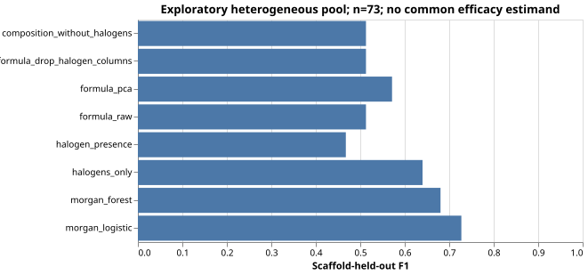
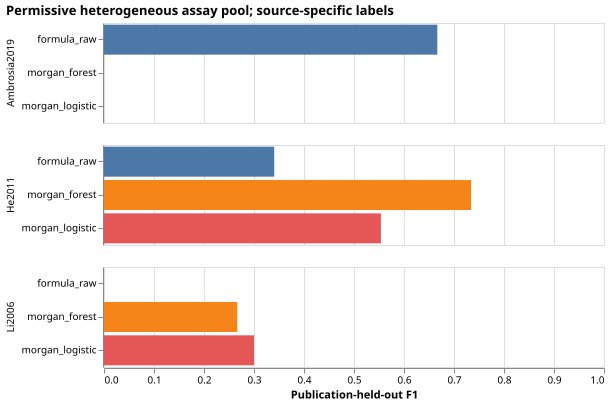

Local-only experiment. 73 structures with intentionally heterogeneous source-specific response labels. Passing the scaffold gate did not establish transferable herbicidal activity. No safer candidate is established.


See publication_transfer.csv for precision, recall, balanced accuracy, AUROC, confusion counts and majority baselines. Source-only and scaffold-purged splits coincide here because publications have no shared scaffold groups. Ambrosia has only two test compounds.
304 provisional plant observations and59 other endpoint observations were transcribed from seven primary papers; one additional fulltext is cached with unresolved supplement access. Controls, extracts, repeated doses and species are observations rather than independent training structures. All new decisions are AI experimental proposals.
Forest OOB F1 is0.7436. OOB does not hold out scaffold families; importance repeat SD is not a p-value. Formula coefficients describe standardized associations with the experimental target, not causal activity or safety effects.